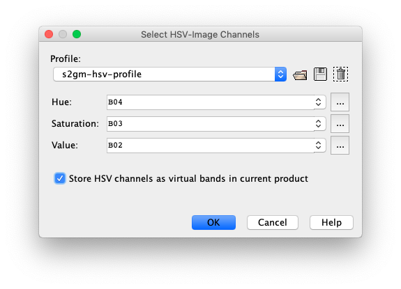

HSV-Image Profile
In this window you are asked to define the HSV channels for a new
RGB Image View. You are able to load defined HSV-Profiles, to create
and store new or define only temporarily new profiles.

Profile
Selects on of the actual stored HSV-Profiles to use for creation of the new image view.
- Use the
 to open a stored profile file.
to open a stored profile file.
- Use the
 to save the currently displayed profile.
to save the currently displayed profile.
- Use the
 to delete the currently displayed profile.
to delete the currently displayed profile.
HSV Channels
Hue - Defines the mathematical expression for the Hue channel.
Saturation - Defines the mathematical expression for the Saturation channel.
Value - Defines the mathematical expression for the Value channel.
Use the  to
to edit the expression for the specific channel by using the Maths Expression Editor.
to
to edit the expression for the specific channel by using the Maths Expression Editor.
Store HSV Channels
Stores the HSV channels into the current product as virtual bands.
HSV-Profile files contain similar content as the RGB-Profile files. They also must have the extension ".rgb".
Multiple default profiles provided by the Sentinel Toolbox in the $S3TBX_INSTALL_DIR$/auxdata/rgb_profiles.
For the file structure please refer to RGB-Profile file.